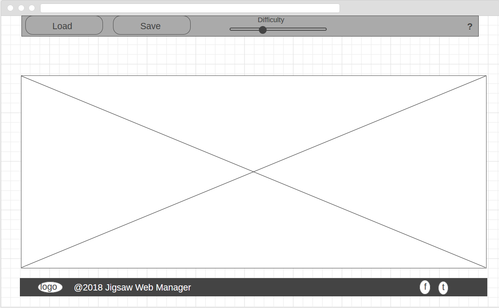
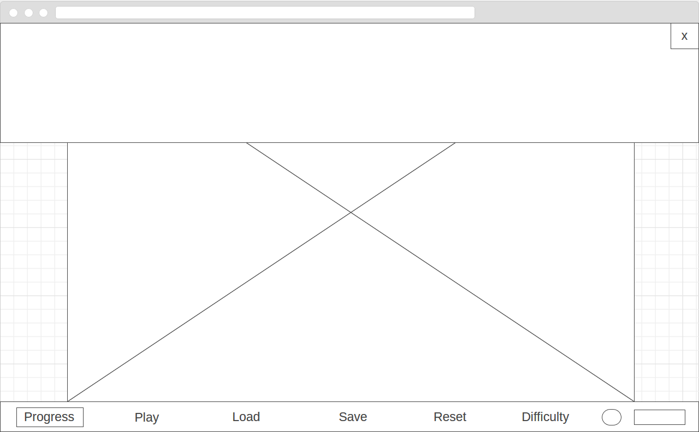
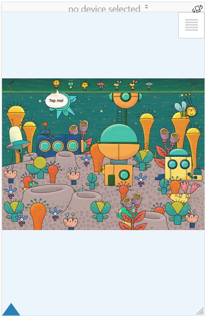

Community Draft
jigr (Jigsaw Web Manager)
project, infoiasi, cliw, web
project, infoiasi, cliw, web
This Web application allows solving puzzles proposed by the program or defined by users. Each player will be able to select - locally or remotely via a URL - an image that will be cropped at runtime into fragments as complicated as possible using generative grammar rules. The pieces will be mixed, the shifts / swings can be performed via drag & drop operations. The application will also provide support for snap placement in the right area. The current status of each puzzle can be saved locally with the possibility of subsequent restoration.
First iteration
Last iteration
Desktop version screenshot
Mobile version screenshots
The user will interact with the application using the following mechanisms: keyboard and mouse. He will be able to use the keyboard to move the pieces around and perform rotation operations. The mouse can be used to drag pieces around and rotate them.
We have been following this development process:
git branch -> current branch
git checkout branch-name -> move to branch branch-name
git checkout -b andrei/add-animations
git commit -m "message that describes commit"
git push -u origin local-branch-name:desired-branch-name-on-github `git push -u origin andrei/add-animations:andrei/add-animations`)
In order to improve user experience and avoid interruptions the application will be conceived as a Single Page Application (SPA).
As such, when the user accesses the URI of the application, the client/browser will download all the necessary code (e.g., HTML, CSS, JavaScript, etc.) from the first page load.
After all the necessary code is retrieved in the context of the first page load, the game/application will be able to provide its functionality without interacting with the backend.
The role of the backend will be to serve just static content in our case, without the role of generating dynamic content.
In this section we will depict the high-level architecture of the application.
In this section we will depict the class design of the application.
Puzzle related classes

Control related classes
In this section we will depict sequence diagrams.
Playing a gameThe data will be saved using a predefined key and it will be represented by a JavaScript object.
When the application is reopened, at a later time, it will first check to see if there is a previous game saved at the predefined key in the Local Storage, and it will resume it; otherwise, it will present the user the normal flow.
{
pieces: [Piece],
isSolved: boolean,
progress: Number
// Possibly other
}
var locales = {
en: {
play: "Play",
gameOver: "Game Over",
...
},
ro: {
play: "Joaca",
gameOver: "Jocul s-a terminat",
...
}
fr: {
}
...
}
for (var span : getLocalizedElements()) {
var id = e.getId();
span.innerHTML = locales[currentLocale][id];
}
Alternatives we managed to find on the Web: